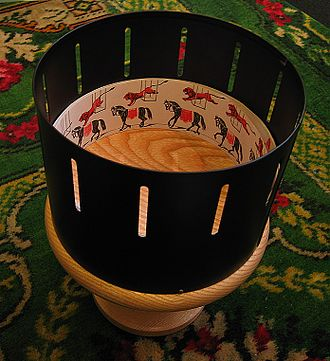
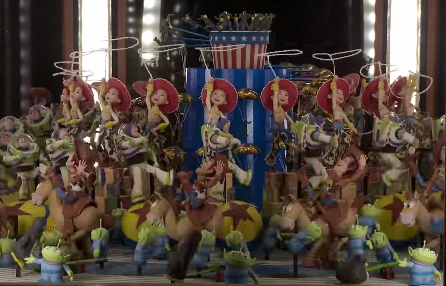
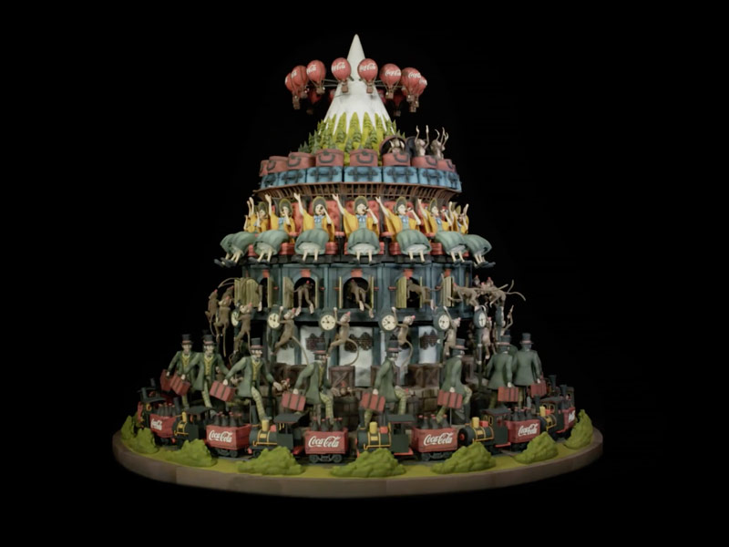

Guest Lecture – Efteling Zoetrope
Wat is een Zoötroop dan eigenlijk? Het is een ‘animatie-apparaat’. Vroeger voordat er film bestond, was dit één van de eerste manier hoe mensen bewegend beeld konden zien. De eerste Zoötroop komt uit 1832. Het is een cilinder met spleetjes waar je door heen kan kijken, met plaatjes aan de binnenkant van verschillende fases van een beweging. Natuurlijk is de techniek verbeterd door de jaren heen, maar het principe is exact hetzelfde. De Efteling Zoötroop heeft geen plaatjes van een beweging maar 3D geprinte beeldjes die dus een animatie laten zien.
Deze Zoötroop staat in de Efteling, en net zoals bijna alles in de Efteling is het doel van deze installatie, Entertainment. Daarnaast is deze installatie gemaakt met Coca Cola, dus een ander doel zou zeker te maken hebben met het neerzetten van de identiteit van Coca Cola.

Er is niet precies verteld met welke technieken deze Zoötroop is gemaakt, maar er is wel een voorloper, genaamd Octomadness. Deze is gemaakt met Arduino.
Een normale Zoötroop werkt door als het ding draait, je hersenen plakken de beelden die je ziet door de spleetjes aan elkaar en daardoor zie je bewegend beeld. In deze installatie zitten natuurlijk geen spleetjes. Er is tijdens het gastcollege niet verteld hoe het wel zat, maar ik ben gaan zoeken naar vergelijkbare projecten om er achter te komen hoe de Efteling Zoötroop werkt. Ik heb toen een Zoötroop gevonden van Pixar, die in Disneyland California Adventure staat. Het ziet er vergelijkbaar uit, en deze werkt met licht in plaats van de spleetjes. Door de belichting precies te timen met hoe de Zoötroop ronddraait, krijg je hetzelfde effect.
Deze installatie past bij HCI doordat er technieken die wij leren bij dit vak, ook gebruikt worden om zo iets te maken. Arduino is dan niet gebruikt bij de Efteling Zoötroop, maar wel bij de voorganger. Dit is hoogstwaarschijnlijk wel wat ingewikkelder dan wat wij behandelen bij HCI, maar als wij als studenten ons langer blijven verdiepen in Arduino, dat we dan ook zoiets zouden kunnen maken.
Mijn mening over de Efteling Zoötroop is dat ik het echt super gaaf vind! Zelf teken ik vrij vaak en heb geprobeert ooit animaties te maken (totdat ik er achter kwam dat het super moeilijk is). Maar als ik het dan op deze manier zie, vind ik het een zeer unieke manier om animaties weer te geven.

De Efteling Zoötroop is gemaakt door: The Next Empire in samenwerking met de Efteling en Coca Cola.